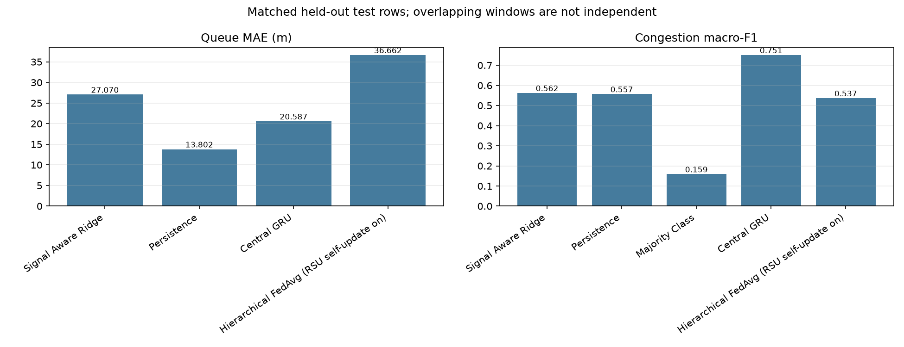
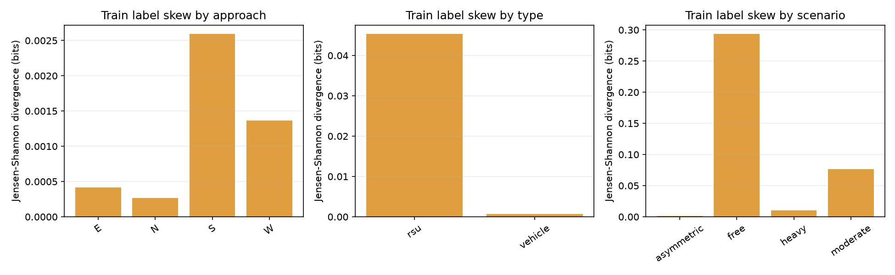
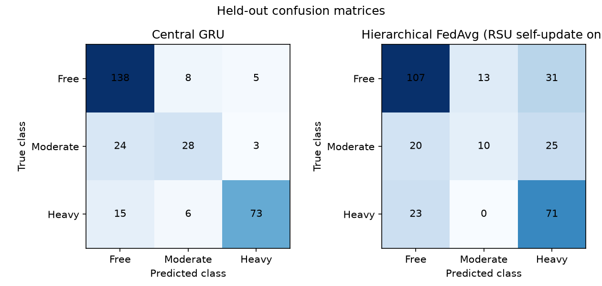
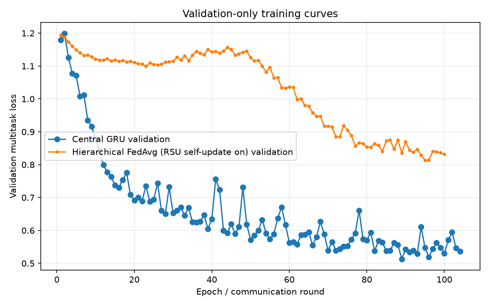
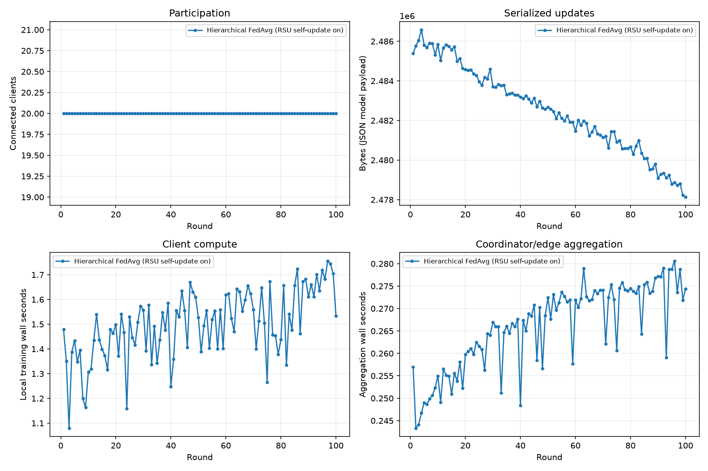
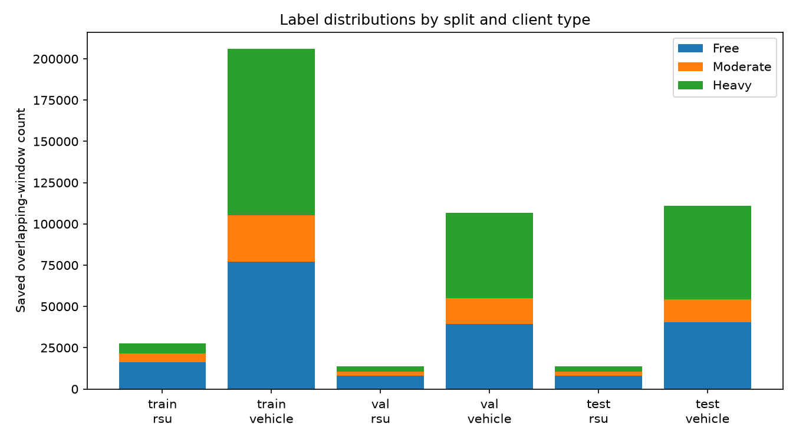
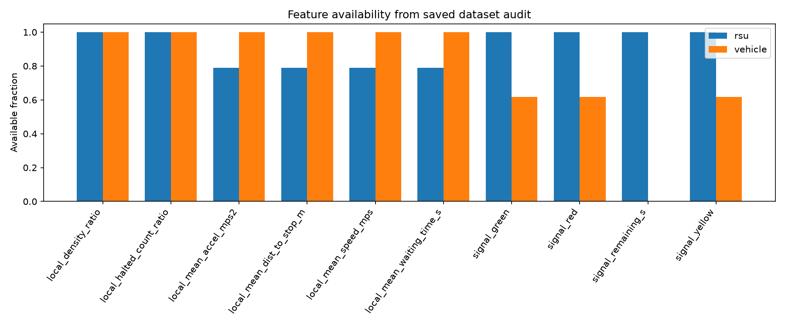
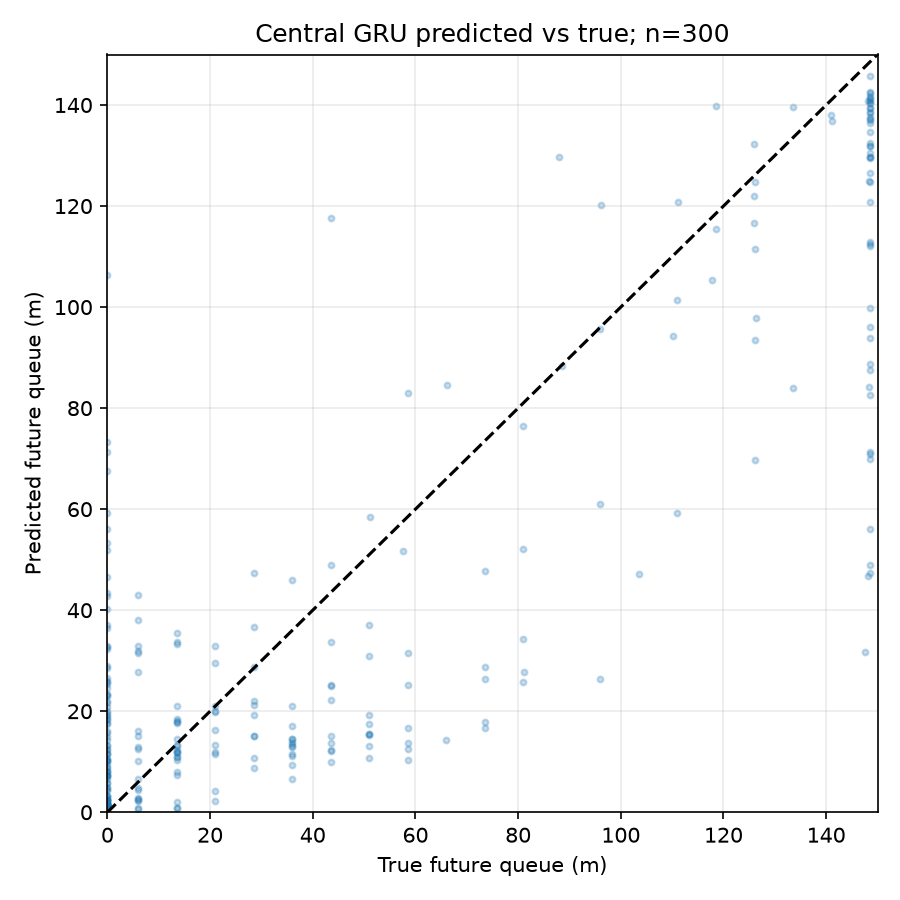
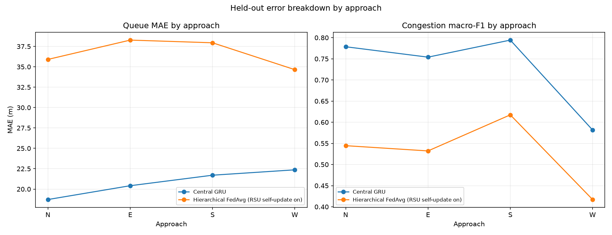
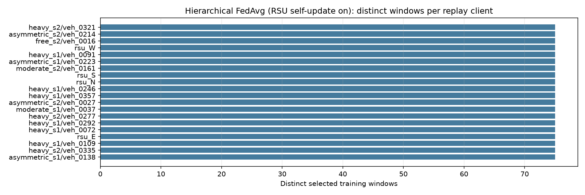

Dataset: data\phase2_compact_1500; matched test rows: 300.
Development results use overlapping windows; they are descriptive and not independent-run confidence estimates.
| Method | N | Queue MAE (m) | Queue RMSE (m) | Macro-F1 | Balanced accuracy |
|---|---|---|---|---|---|
| Matched signal-aware Ridge | 300 | 27.0696 | 36.9731 | 0.5624 | 0.6201 |
| Matched majority-class diagnostic | 300 | n/a | n/a | 0.1591 | 0.3333 |
| Matched RSU persistence | 70 | 13.8021 | 28.9910 | 0.5568 | 0.5364 |
| Central GRU | 300 | 20.5873 | 29.7489 | 0.7510 | 0.7332 |
| Hierarchical FedAvg (RSU self-update on) | 300 | 36.6623 | 45.1323 | 0.5366 | 0.5486 |










- Central, flat, IID and hierarchical metrics use identical sampled test rows; their training cohort sizes differ and the federated participant cohorts are not matched across methods. - Local-only results use held-out rows matched on the selected client's type and approach, not the global-model test cohort; do not compare the local aggregate as if rows were identical. - Moderate-class recall, class support, and confusion matrices are retained in each `metrics.json`; a zero moderate recall is a material negative result, not an omitted metric. - Communication bytes are the implementation's JSON model-payload sizes, not measured network traffic. Wall-clock times are from the recorded CPU environment. - The optional live online federation path is smoke-tested separately; this offline report does not measure live learning performance, radio/network behavior, a formal privacy guarantee, or attack/trust behavior. ## Generated figures ## Training label-distribution divergence Jensen-Shannon divergence (base 2, bits) compares each training subgroup's pooled class distribution to all training clients. It is descriptive and uses overlapping-window histograms. ### Approach | Group | Clients | Windows by class [free, moderate, heavy] | JS divergence (bits) | |---|---:|---|---:| | E | 427 | [22265, 7563, 22987] | 0.000413 | | N | 503 | [24658, 9404, 26935] | 0.000269 | | S | 539 | [25218, 9013, 36709] | 0.002591 | | W | 398 | [21162, 7364, 20203] | 0.001368 | ### Type | Group | Clients | Windows by class [free, moderate, heavy] | JS divergence (bits) | |---|---:|---|---:| | rsu | 32 | [16253, 5162, 6137] | 0.045300 | | vehicle | 1835 | [77050, 28182, 100697] | 0.000724 | ### Scenario | Group | Clients | Windows by class [free, moderate, heavy] | JS divergence (bits) | |---|---:|---|---:| | asymmetric | 523 | [26571, 9191, 36056] | 0.001449 | | free | 128 | [11489, 1723, 0] | 0.293274 | | heavy | 768 | [35633, 11549, 64580] | 0.010626 | | moderate | 448 | [19610, 10881, 6198] | 0.076694 | ## Per-client label and sample distributions Per-client records for all 1796 eligible natural training clients are saved in `client_label_distributions.json`. The declared divergence is base-2 Jensen-Shannon divergence in bits from the applicable pooled class distribution. `p90` is the worst-decile threshold, not a maximum. ### Natural clients by client type | Group | Clients | Windows | Median windows (IQR; p90) | Median JSD (IQR; p90), bits | Label histogram [free, moderate, heavy] | |---|---:|---:|---|---|---| | rsu | 32 | 27552 | 861.0 (0.0; 861.0) | 0.165672 (0.277857; 0.315086) | [16253, 5162, 6137] | | vehicle | 1764 | 205032 | 100.0 (95.0; 223.0) | 0.039555 (0.275802; 0.397873) | [76252, 28123, 100657] | ### Natural clients by approach | Group | Clients | Windows | Median windows (IQR; p90) | Median JSD (IQR; p90), bits | Label histogram [free, moderate, heavy] | |---|---:|---:|---|---|---| | E | 408 | 52549 | 98.0 (83.0; 238.0) | 0.037001 (0.280317; 0.397873) | [22002, 7560, 22987] | | N | 491 | 60828 | 98.0 (99.0; 211.0) | 0.034023 (0.276742; 0.397873) | [24501, 9392, 26935] | | S | 519 | 70676 | 110.0 (108.0; 246.0) | 0.041119 (0.269113; 0.397873) | [25012, 8992, 36672] | | W | 378 | 48531 | 91.5 (104.2; 246.5) | 0.078744 (0.279380; 0.397873) | [20990, 7341, 20200] | ### Natural clients by scenario | Group | Clients | Windows | Median windows (IQR; p90) | Median JSD (IQR; p90), bits | Label histogram [free, moderate, heavy] | |---|---:|---:|---|---|---| | asymmetric | 504 | 71571 | 109.0 (122.8; 259.7) | 0.036583 (0.263785; 0.397873) | [26361, 9191, 36019] | | free | 114 | 13011 | 61.5 (49.5; 102.7) | 0.397873 (0.096724; 0.397873) | [11288, 1723, 0] | | heavy | 754 | 111647 | 132.0 (92.0; 240.0) | 0.026308 (0.031236; 0.230456) | [35554, 11516, 64577] | | moderate | 424 | 36355 | 73.0 (55.2; 112.7) | 0.285309 (0.308441; 0.397873) | [19302, 10855, 6198] | No matched natural/IID training-cohort artifacts were supplied, so no IID divergence comparison is reported. - `plots/matched_metrics.png` - `plots/label_skew_js.png` - `plots/confusion_matrices.png` - `plots/validation_curves.png` - `plots/federation_costs.png` - `plots/label_distributions.png` - `plots/feature_availability.png` - `plots/central_queue_scatter.png` - `plots/approach_breakdown.png` - `plots/client_sample_counts.png` ## Input experiment artifacts - `client_count_20_20261104T094318Z\central_gru_phase2_compact_1500_seed20261031_20261104T093628Z` — `central_gru_phase2_compact_1500_seed20261031_20261104T093628Z`; 1500 selected training windows. - `client_count_20_20261104T094318Z\hierarchical_fedavg_phase2_compact_1500_seed20261031_20261104T094318Z` — `hierarchical_fedavg_phase2_compact_1500_seed20261031_20261104T094318Z`; 1500 selected training windows.